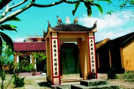
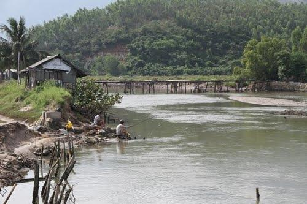
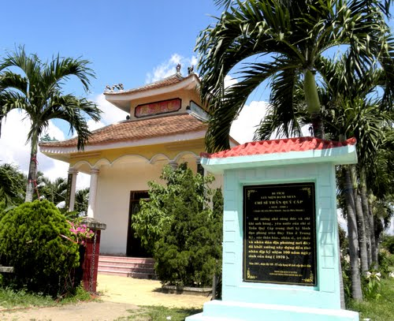
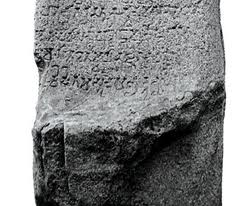

CULTURAL HERITAGE QUANG TRI

Dien Khanh Confucius Temple.
This is an architectural complex built to worship Confucius, who enlightened the Confucianism in China, and still life or persons claiming to be "Great Master said," and at the same time to recognize the merits of those at, study well, have been achieved. In 1803, King Gia Long the only example of Literature in Phu Loc, Hoa Chau town Binh Hoa district, Phu Loc colonized West - the town of Dien Khanh, Khanh Hoa province. Along with the change of time, the Temple of Literature has undergone four renovations in 1892, 1904, 1941, 1959, but retained the original architecture.
Currently, Van Mieu only keep the two stone stele at Tu Duc, 11 (1858) helps us to better understand the history, culture and daily life of the people of Khanh Hoa and the process of finalizing the Temple of Literature in 1854. There is also a card in the Bai Road tell me more about the measure of cultural martial arts, academics, excellent item, local dignitaries and the students from the first dynasty to the time of Tu Duc.
With a rich history, the Temple of Literature offers tremendous value in the learning process, to receive knowledge and show respect for the important island treasure to enrich the national cultural heritage.

War Dong Bo
Today want to visit the war zone synchronization, from the central city of Nha Trang, tourists down south along Highway 1A, to Vinh Hiep commune in the suburbs, then turn left along the stone paved sketchy, the territory Vinh Thai, towards the mountains. To É are stopping places, imposing mountains sync pearling left. From here, visitors began to mingle with the air resistance. Just follow the path around an hour to rugged mountain, you will see a large text written in white paint on the huge rocks in front: "Monuments Lung Spring 1000 meters" and arrows . It is one of the bases of inter-district headquarters town of Vinh Xuong - Nha Trang in the resistance.
Visit the war zone sync today, we are still thrilled to see the relics and images intact resistance of the days of hardships, her hero: the large timber used as a prop or north to exit go, there are signs of worn, stands of bamboo, timber sleepers in the grotto or large floor ken wall thickness before the main entrance used as a meeting place, cultural performances, the rock used as a chair, a desk, rice mortars, bamboo pipe water from the stream into the cave, the smoke streaks on the cliffs, "military culture" as radiating the fragrance and warmth ...
And here, on the cliffs, deep slit in the stone aggregate quietly whispered the other still kept many priceless artifacts: the notebook, diary, an essay, a poem, a letter to a relative , an embroidered cloth, a keepsake of love is sealed several times in the plastic bag ... but all of it went away has not returned to find conditions, or was permanently located in a somewhere.
It's rare to have a basis for revolution and war seemingly in deep forest, deep mountain but so far remain largely intact, adjacent to the city and be able to visit so easy.

Temple Tran Quy Cap
Temple Tran Quy Cap - even patriotic movement Duy Tan, bravely led the locals against the French, built on a the ground up to be beheaded (Wood is named after the Tran Quycables lying down), side of the Kan River, the town of Dien Khanh. Standing on the Kan River bridge and look after trees have small, spreading branches spread wide as the arm is an old shrine Tran Quy Cap.
Temple was built in Canh Tuat 1970. Temple has a modern structure is not the same way the structure of the temple and other shrines Room in Dien Khanh. Temple style temple architecture mixed with modern architecture. So the Dien Khanh still known as the People's Temple Tran Quy Cap.
Small low shrines, built in the ancient style of floor, roof four equal size come in four directions. Floor on the roof corners in the neck and lower roof are decorated with modern style relief. Temple turned to the east, overlooking the river Kan. Before shrines 3.5 m high mast, building on hexagonal water tank. Either side of the mast, each party can "Lu expect" up to 1.5 m, three feet cjac sure the tiger-shaped structure located on the circular molded pad. This is used to burn all the places in times of sacrifice, or burn to light the incense smoke. Temple covers an area of 12m2, under paved with brick flower.

Brewing Martial Edge.
Khanh Hoa is a land of ancient Champa recorded through the remains of beer Martial Edge, a cultural heritage found in the village of Vo edge west of Nha Trang and with countless relics available for those who charm collection survey . Location: In Nha Trang Vo western edge village.
.